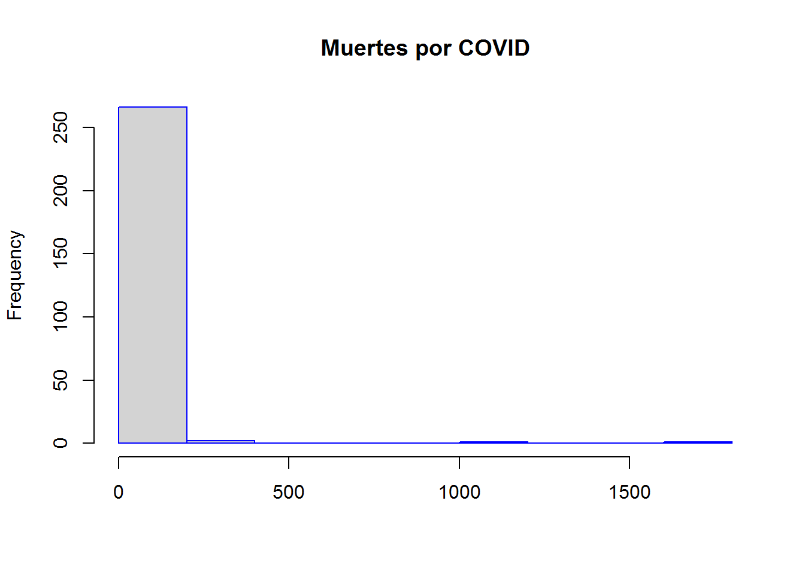
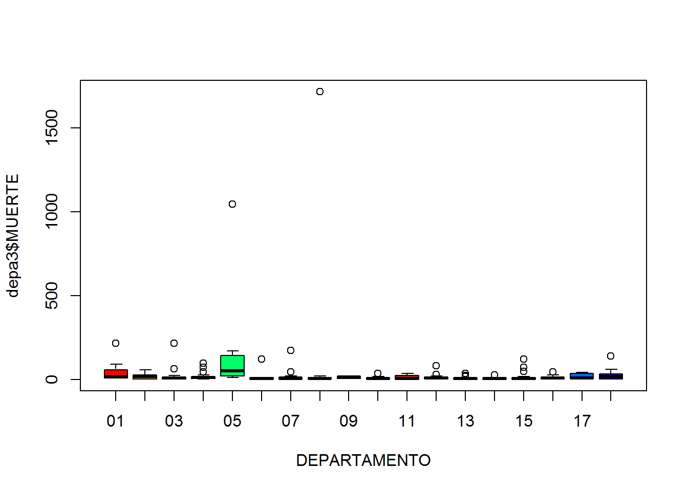
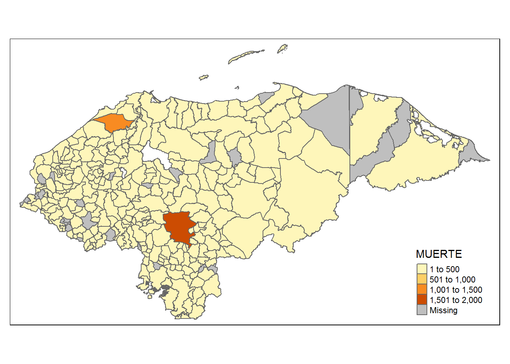
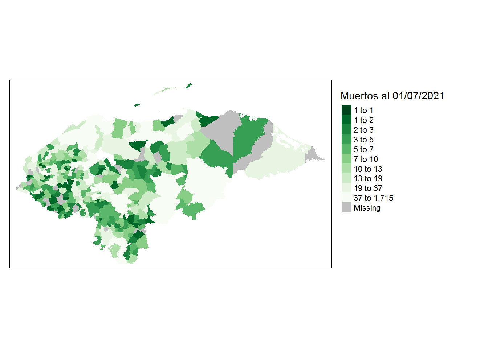
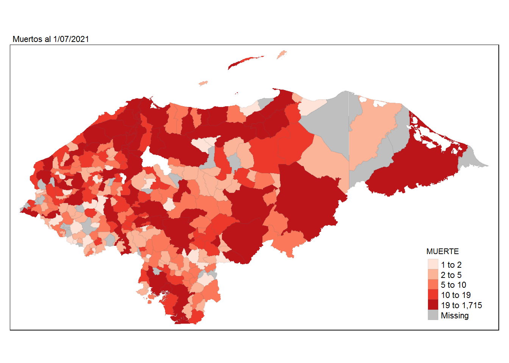
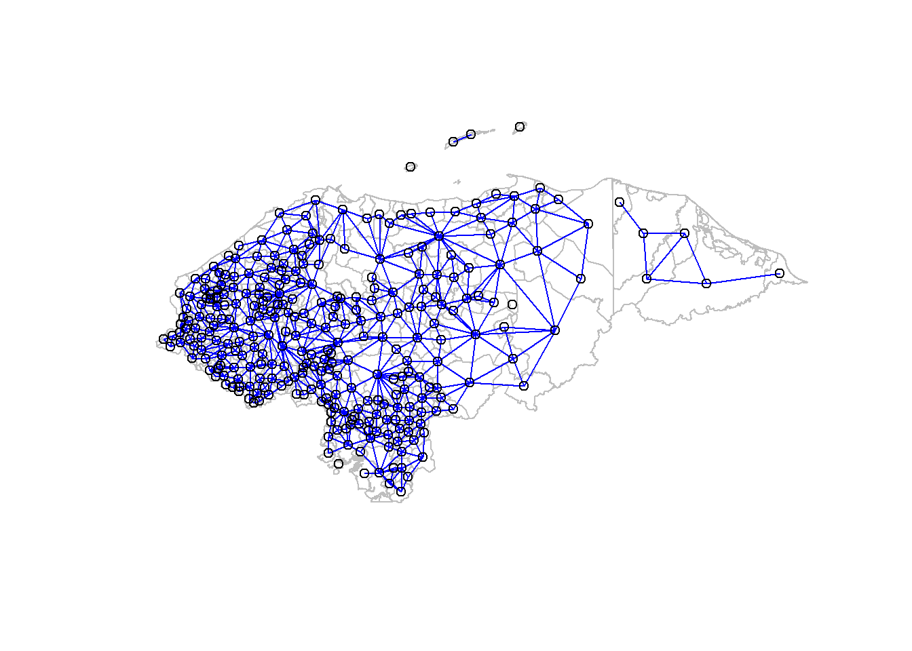

Visita la página Web: https://datascience-machinelearning-solutions.github.io/homepage-ho.github.io/
## Data: (c) OpenStreetMap contributors, ODbL 1.0 - http://www.openstreetmap.org/copyright## Routing: OSRM - http://project-osrm.org/Explorando datos
``
Explorar distribución de valores
knitr::opts_chunk$set(echo = FALSE)
hist(depa3$MUERTE, main= "Muertes por COVID", xlab="", border = "blue", color= "green")## Warning in plot.window(xlim, ylim, "", ...): "color" is not a graphical
## parameter## Warning in title(main = main, sub = sub, xlab = xlab, ylab = ylab, ...): "color"
## is not a graphical parameter## Warning in axis(1, ...): "color" is not a graphical parameter## Warning in axis(2, ...): "color" is not a graphical parameter
Ver outliers numéricos  Explorar distribucion espacial de variables de interes con tmap



Vecinos
Lista de vecinos (de clase nb) a partir de los poligonos con poly2nb
poly2nb(polis, row.names = NULL, queen=TRUE,)
polis pueden ser sf o SpatialPolygons (sp) row.names = columna con el id o nombre de los poligonos queen = True vecinos por 1 punto de borde, False vecinos por dos o mas puntos de borde
## Loading required package: sp## Loading required package: spDataExplorar los vecinos
Mapear los vecinos

¿Cómo seria con los pesos estandarizados por fila (style=‘W’)?
Matrix de pesos en formato listw
## Characteristics of weights list object:
## Neighbour list object:
## Number of regions: 297
## Number of nonzero links: 1586
## Percentage nonzero weights: 1.798002
## Average number of links: 5.340067
## 4 regions with no links:
## 155 157 240 273
##
## Weights style: B
## Weights constants summary:
## n nn S0 S1 S2
## B 293 85849 1586 3172 40360Exploración de Indices de asociación/correlación espacial
Moran I Global
##
## Moran I test under randomisation
##
## data: depa3$MUERTE
## weights: lwb
## omitted: 10, 13, 25, 32, 40, 52, 77, 106, 166, 173, 181, 184, 200, 201, 202, 203, 208, 209, 218, 232, 234, 250, 278, 293, 294, 295, 296 n reduced by no-neighbour observations
##
##
## Moran I statistic standard deviate = 0.25997, p-value = 0.3974
## alternative hypothesis: greater
## sample estimates:
## Moran I statistic Expectation Variance
## 0.0028988023 -0.0038022814 0.0006644451Cómo se interpretan el valor de Moran I? ¿Alguno es significativo?7